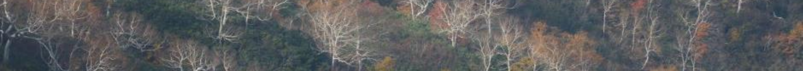
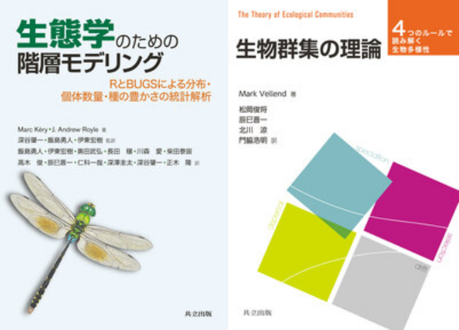

京都大学 大学院農学研究科
森林科学専攻 森林生態学研究室 准教授
community.ecologist at gmail
dot com
専門は群集生態学です。樹木群集の多種共存と生態系機能について、長期モニタリング・操作実験・理論的アプローチを組み合わせて研究しています。基礎科学としての群集生態学に立脚して、「森林伐採や気候変動などの人為的要因が多種共存に与える影響」や「生物多様性と森林生産性の関係」といった、森林管理への応用を見据えたテーマに取り組んでいます。主な調査地は冷温帯林ですが、近年はマングローブなど他の生態系にも研究対象を広げています。大学院進学や共同研究にご興味のある方は、お気軽にご連絡ください。
キーワード：生物多様性、生態系機能、森林管理、気候変動、群集動態、統計モデリング、混植実験、DNAメタバーコーディング、リモートセンシング
Research Mapはこちらをご覧ください。
Daido Y, Konrai K, Onoda Y, Tatsumi S (2026) Thermophilization, climatic debt, and consequent declines in primary productivity. bioRxiv 10.64898/2026.04.28.721369.
Tatsumi S, Punwasi N, Roberto A, Cadotte MW (2023) Response diversity is key to buffer ecosystem productivity against multiple environmental change drivers. bioRxiv 10.1101/2023.08.20.554000.
2026
Ma W, Hu J, Luo W, Lü X, Liang X, Zhang B, Yu Q, Han X, Tatsumi S, Wang Z, Hautier Y (2026) Demographic and growth dynamics jointly shape grassland productivity under extreme drought. Global Change Biology 32(7): e71016.
Yao J, Li X, Tatsumi S, Ding Y, Huang J, Xu Y, Zhang Z, Long W, Zang R (2026) Scale dependence of woody plant β-diversity in a tropical rainforest metacommunity. Ecology and Evolution 16(7): e74022.
2025
Iritani R, Ontiveros VJ, Alonso D, Capitán JA, Godsoe W, Tatsumi S (2025) Jaccard dissimilarity in stochastic community models based on the species-independence assumption. Ecography 2025(8): e07737.
Hrdina M, Molina-Valero JA, Kuželka K, Tatsumi S, Yamaguchi K, Melichová Z, Mokroš M, Surový P (2025) Obtaining the highest quality from a low-cost mobile scanner: a comparison of several pipelines with a new scanning device. Remote Sensing 17(15): 2564.
Cadotte MW, Tatsumi S (2025) Uncovering the mechanisms underpinning divergent environmental change impacts on biodiversity and ecosystem functioning. Ecology 106(2): e70040.
Oikawa N, Nakagawa Y, Owari T, Tatsumi S, Suzuki SN (2025) Utilising LiDAR-equipped iPhone in forestry: constructing 3D models and measuring tree sizes in a planting site. Ecological Solutions and Evidence 6(1): e12399.
2024
Barrilli GHC, Tatsumi S, De Biasi JB, Cruz ARS, de Oliveira TCT, Hostim-Silva M, Hackradt C, Félix-Hackradt FCF (2024) Simplified fish larval supply in coastal areas after a dam burst in Brazil. Marine Pollution Bulletin 205: 116615.
Naka M, Masumoto S, Nishizawa K, Matsuoka S, Tatsumi S, Kobayashi Y, Suzuki KF, Xu X, Kawakami T, Katayama N, Makoto K, Okada K, Uchida M, Takagi K, Mori AS (2024) Long-term consequences on soil fungal community structure: monoculture planting and natural regeneration. Environmental Management 73(4): 777–787.
2023
Tatsumi S, Loreau M (2023) Partitioning the biodiversity effects on productivity into density and size components. Ecology Letters 26(11): 1963–1973.
Tatsumi S, Yamaguchi K, Furuya N (2023) ForestScanner: a mobile application for measuring and mapping trees with LiDAR-equipped iPhone and iPad. Methods in Ecology and Evolution 14(7): 1603–1609.
Tatsumi S, Ohgue T, Azuma WA, Nishizawa K (2023) Bark traits affect epiphytic bryophyte community assembly in a temperate forest. Plant Ecology 224(12): 1089–1095.
2022
2021
Tatsumi S, Iritani R, Cadotte MW (2021) Temporal changes in spatial variation: partitioning the extinction and colonisation components of beta diversity. Ecology Letters 24(5): 1063–1072.
Tatsumi S, Matsuoka S, Fujii S, Makoto K, Osono T, Isbell F, Mori AS (2021) Prolonged impacts of past agriculture and ungulate overabundance on soil fungal communities in restored forests. Environmental DNA 3(5): 930–939.
Suzuki KF, Kobayashi Y, Seidl R, Senf C, Tatsumi S, Koide D, Azuma WA, Higa M, Koyanagi TF, Qian S, Kusano Y, Matsubayashi R, Mori AS (2021) The potential role of an alien tree species in supporting forest restoration: lessons from Shiretoko National Park, Japan. Forest Ecology and Management 493: 119253.
Sookhan N, Lorenzo A, Tatsumi S, Yuen M, MacIvor JS (2021) Linking bacterial diversity to floral identity in the bumble bee pollen basket. Environmental DNA 3(3): 669–680.
2020
Tatsumi S, Strengbom J, Čugunovs M, Kouki J (2020) Partitioning the colonization and extinction components of beta diversity across disturbance gradients. Ecology 101(12): e03183.
Tatsumi S (2020) Tree diversity effects on forest productivity increase through time because of spatial partitioning. Forest Ecosystems 7: 24.
Malloch B, Tatsumi S, Seibold S, Cadotte MW, MacIvor JS (2020) Urbanization and plant invasion alter the structure of litter microarthropod communities. Journal of Animal Ecology 89(11): 2496–2507.
2019
Tatsumi S, Cadotte MW, Mori AS (2019) Individual-based models of community assembly: neighborhood competition drives phylogenetic community structure. Journal of Ecology 107(2): 735–746.
Cadotte MW, Carboni M, Si X, Tatsumi S (2019) Do traits and phylogeny support congruent community diversity patterns and assembly inferences? Journal of Ecology 107(5): 2065–2077.
2018
2017
Tatsumi S, Ohgue T, Azuma A, Tuovinen V, Imada Y, Mori AS, Thor G, Ranlund Å (2017) Tree hollows can affect epiphyte species composition. Ecological Research 32(4): 503–509.
Mori AS, Tatsumi S, Gustafsson L (2017) Landscape properties affect biodiversity response to retention approaches in forestry. Journal of Applied Ecology 54(6): 1627–1637.
2016
Tatsumi S, Owari T, Mori AS (2016) Estimating competition coefficients in tree communities: a hierarchical Bayesian approach to neighborhood analysis. Ecosphere 7(3): e01273.
Nishizawa K, Tatsumi S, Kitagawa R, Mori AS (2016) Deer herbivory affects the functional diversity of forest floor plants via changes in competition-mediated assembly rules. Ecological Research 31(4): 569–578.
Owari T, Okamura K, Fukushi K, Kasahara H, Tatsumi S (2016) Single-tree management for high-value timber species in a cool-temperate mixed forest in northern Japan. IJBSESM 12(1–2): 74–82.
2015
Mori AS, Qian S, Tatsumi S (2015) Academic inequality through the lens of community ecology: a meta-analysis. PeerJ 3: e1457.
Owari T, Tatsumi S, Ning L, Yin M (2015) Height growth of Korean pine seedlings planted under strip-cut larch plantations in northeast China. International Journal of Forestry Research: Art 178681.
2014
Tatsumi S, Owari T, Yin M, Ning L (2014) Neighborhood analysis of underplanted Korean pine demography in larch plantations: implications for uneven-aged management in northeast China. Forest Ecology and Management 322: 10–18.
Tatsumi S, Owari T, Kasahara H, Nakagawa Y (2014) Individual-level analysis of damage to residual trees after single-tree selection harvesting in northern Japanese mixedwood stands. Journal of Forest Research 19(4): 369–378.
2013
2010

辰巳晋一（2021）「垂直（階層）構造」. 日本森林学会（編）. 森林学の百科事典. 丸善出版. 42–43頁.
Marc Kéry・J. Andrew Royle（著）, 深谷肇一・飯島勇人・伊東宏樹（監訳）, 飯島勇人・伊東宏樹・奥田武弘・長田穣・川森愛・柴田泰宙・高木俊・辰巳晋一・仁科一哉・深澤圭太・深谷肇一・正木隆（訳）（2021）生態学のための階層モデリング ―RとBUGSによる分布・個体数量・種の豊かさの統計解析―. 共立出版.
Mark Vellend（著）, 松岡俊将・辰巳晋一・北川涼・門脇浩明（訳）（2019）生物群集の理論 ―4つのルールで読み解く生物多様性―. 共立出版.
西園朋広、細田和男、齋藤英樹、高橋正義、北原文章、山田祐亮、鄭峻介、志水克人、石橋聡、古家直行、辰巳晋一、小谷英司、松浦俊也、齋藤和彦、田中邦宏、田中真哉、福本桂子、近藤洋史、高橋與明、佐野真琴、鷹尾元（2023）平成28～令和2年度に調査した収穫試験地等固定試験地の経年成長データ (収穫試験報告 第27号). 森林総合研究所研究報告 22(3): 141–190.
辰巳晋一（2021）多種混植による森林生産性の向上. 北の森だより 27: 2–3.
辰巳晋一（2021）摩天楼と緑の街、トロント. 北方林業 72(3): 25–27.
石橋聡、古家直行、辰巳晋一（2019）北見地方天然林における洞爺丸台風風倒後の長期林分動態. 北方森林研究 67: 61–62.
橋本徹、伊藤江利子、梅村光俊、古家直行、辰巳晋一、石橋聡（2019）筋状地掻きで更新したダケカンバの立木位置と微地形の関係. 北方森林研究 67: 53–56.
辰巳晋一（2019）ササ密度は中径針葉樹の下で薄い. 北方林業 70(1): 32–35.
辰巳晋一（2016）単木情報を使った統計モデリング. 森林計画学会誌 50(1): 51–53.
辰巳晋一（2015）カラマツ林に樹下植栽されたチョウセンゴヨウの動態モデリング：中国東北部における二段林施業に向けて. 広嶋卓也・吉本敦 編. 「森林計画・計測における統計理論の応用に係わる若手研究集会」資料集. pp. 10–12. (ISBN 978-4-915870-45-3)
尾張敏章、江口由典、宅間隆二、岡村行治、福岡哲、木村徳志、辰巳晋一（2015）択伐天然林の更新を補助するための精密植栽技術の開発 (予報). 北方森林研究 63: 81–84.
Owari T, Tatsumi S, Ning L, Yin M (2014) Height growth of Korean pine saplings planted under strip-cut larch plantations in northeast China. The International Forestry Review 16(5): 366–367.
Owari T, Okamura K, Fukushi K, Kasahara H, Tatsumi S (2014) Single-tree management for high-value timber species in a mixed conifer-hardwood forest in northern Japan. The International Forestry Review 16(5): 144.
Tatsumi S, Owari T, Ohkawa A, Nakagawa Y (2013) Bayesian modeling of neighborhood competition in uneven-aged mixed-species stands. Formath 12: 191–209.
Tatsumi S, Owari T, Toyama K, Shiraishi N (2012) Adaptation of a spatially-explicit individual-based forest dynamics model SORTIE-ND to conifer-broadleaved mixed stands in the University of Tokyo Hokkaido Forest. Formath 11: 1–26.
尾張敏章、福士憲司、広川俊英、井上崇、江口由典、辰巳晋一、美濃羽靖、中島徹（2012）林分施業法の選木技術：ウダイカンバ二次林の事例. 北方森林研究 60: 77–80.
Tatsumi S, Owari T, Yamamoto H, Shiraishi N (2010) Forty-two years of stand structure development in a natural sub-boreal forest under selection system in central Hokkaido, Japan. The International Forestry Review 12(5): 87.
辰巳晋一、尾張敏章、山本博一、白石則彦（2010）混交林択伐施業による42年間の林分構造の変化：東京大学北海道演習林の事例. 関東森林研究 61: 53–56.
Annals of Forest Science, Biological Conservation, Biological Invasions, Biological Reviews, Canadian Journal of Forest Research (2), Conservation Science and Practice (4), Diversity and Distributions, Ecography (3), Ecological Processes, Ecological Research (4), Ecology (4), Ecology and Evolution, Ecology Letters (5), Ecosphere, Forest Ecology and Management (4), Forestry Chronicle, Forests (4), Frontiers in Plant Science, Functional Ecology, Global Ecology and Biogeography, Journal of Animal Ecology, Journal of Applied Ecology (3), Journal of Biogeography (2), Journal of Ecology, Journal of Forest Research (2), Journal of Mountain Science, Journal of Plant Research (2), Journal of Sustainable Forestry, Journal of Vegetation Science (5), Landscape and Ecological Engineering, Methods in Ecology and Evolution, Nature Climate Change, Nature Ecology & Evolution, Oecologia (3), Plos One, Population Ecology, Progress in Earth and Planetary Science, Scientific Data, Scientific Reports (2), Swiss National Science Foundation, Trees Structure and Function, 森林計画学会誌 (3), 北方森林研究
査読/出版比 = 5.64（査読した原稿79部 / 出版した筆頭論文14本）